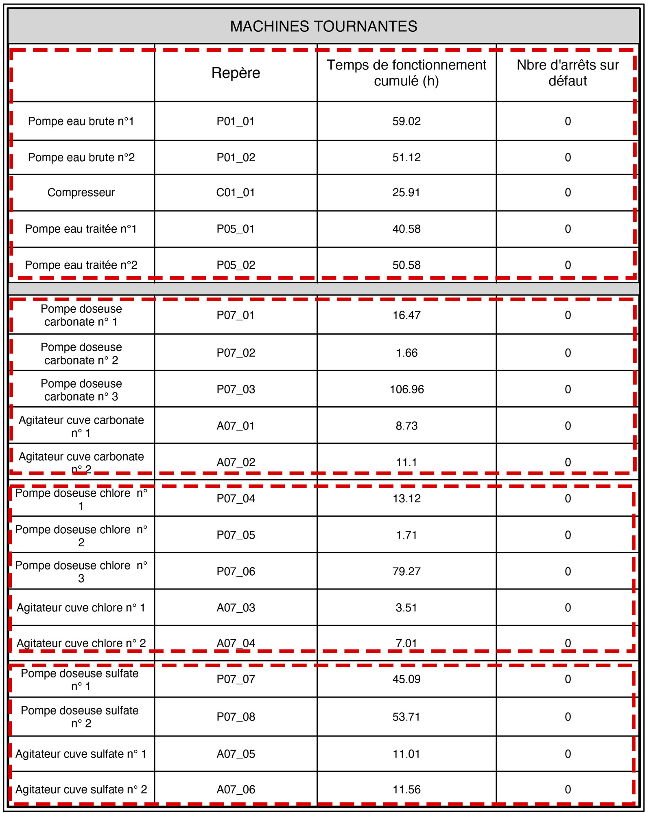

Donnnées provenant de la page 1 du rapport 
Questions
- Le nombre d'heures des agitateurs est-il cohérent ?
Oui sur le terrain les opérateurs ne respectent pas la permutation cyclique qui n’est pas automatique.
La question porte sur le total cumulé d'heures d'utilisation. Le nombre est normal, ils n'ont quasiment pas eté utilisés. La station n'a pas tourné 24h/24 et souvent sur le groupe électrogène.
- Les données sont-elles bien des valeurs cumulées quotidiennes ?
En effet
- Si les valeurs sont cumulées, pourquoi les données de « Pompes sulfate » sont-elles plus faible en novembre qu'en Avril ?
C’est certainement lié à l’exploitation.
- Les valeurs de la variable « Nombre d'arret sur défaut » sont toutes à zéro. Cela reflète-t-il la réalité ?
Oui aucune survenance de surintensité sur la période n’a été signalée.